Sobre mí
Mi experiencia en fotografía
Mi nombre es Juan Ubaldi. Nací el 12 de abril de 1992. Desde chico siempre miraba el planisferio y me apasionaban los mapas y los continentes, el recocrrido de los rios, los mares, los océanos y las capitales de los paises. No fue hasta el momento en el que pude empezar a viajar que esa fascinacion aumentó de manera exponencial. Soy además un joven apasionado por la fotogrfafía. Con una formación casi autodidacta, pulida con la licenciatura en fotografía que realicé en la Universidad Nacional de La Plata, e intentando perfeccionarme día a día y con el objetivo de llevar más allá lo que es una pasión, intentando hacer una calidad de vida surge este proyecto. Arranqué esta aventura hace 5 años, cuando conseguí una linda cámara profesional y tuve la suerte de viajar por muchos lugares, captando la naturaleza y otros sitios en su estado más espontaneo. Enseguida me dí cuenta que debía explotar eso que tanto me gustaba y así surgió este proyecto.
Que trabajos realizo
Básicamente no me encasillo en algo. Si bien mi especialidad son las fotos de paisajes, obtenidas en diferentes lugares, también capturo momentos personales como casamientos, comuniones, bautismos etc. Hago distintos back up fotográficos para eventos personales. Si bien es una realidad que cada fotógrafo tiene un campo de preferencia, al transformar la fotografía en un medio de vida me di cuenta que el interactuar con la gente era parte de esto y también me terminó apasionando.
También pongo a disposición mis capturas anteriores para la realización de otros trabajos.
 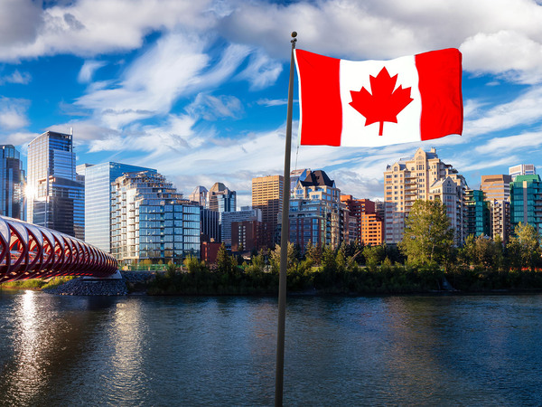
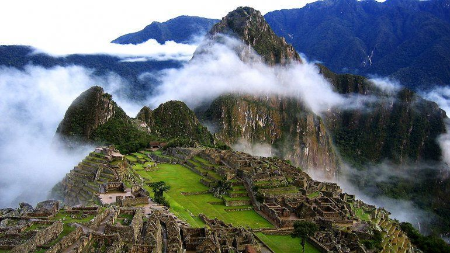
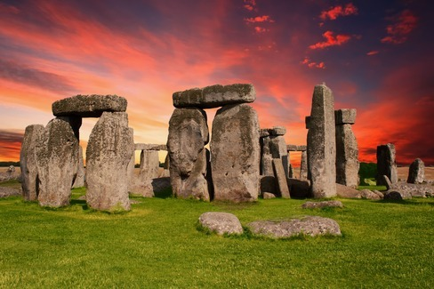
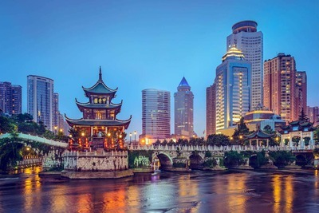
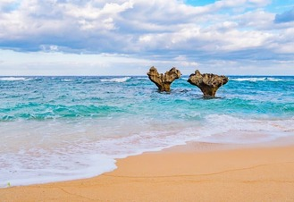
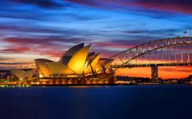
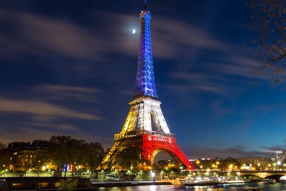
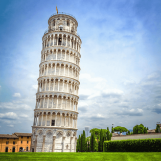
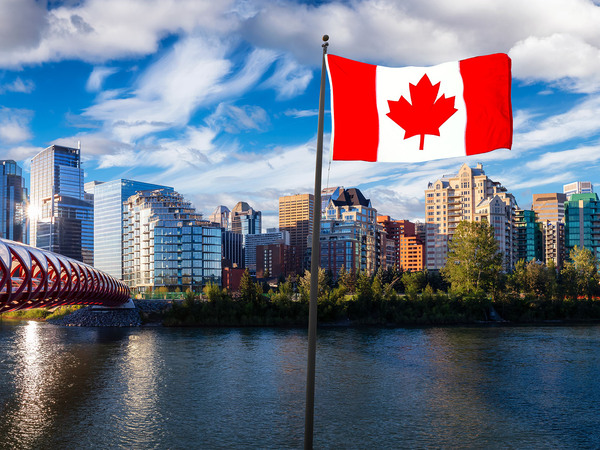
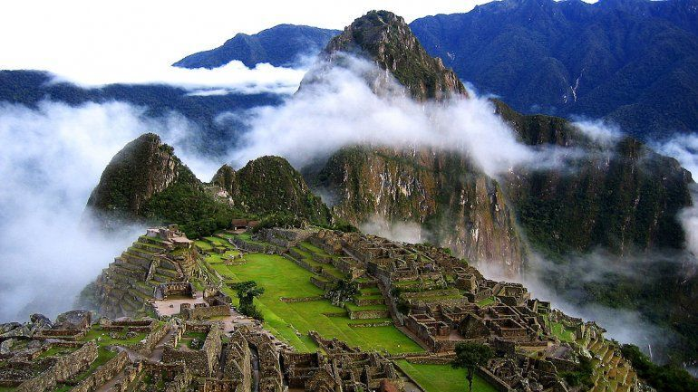
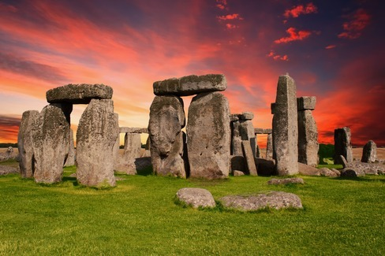
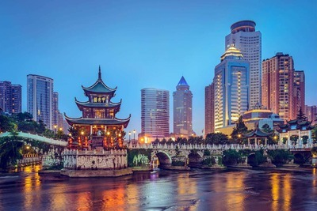
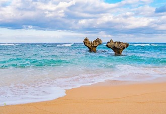
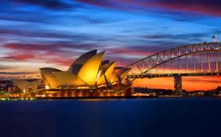
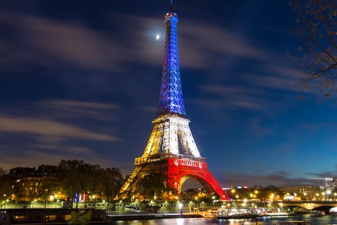
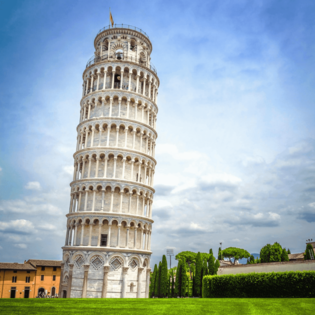